Mentors
Patron
PROF. DHARMENDER SAINI
Principal, Bharati Vidyapeeth’s College of Engineering
Editorial Mentors
YOGITA ARORA
Associate Professor (E.C.E.), BVCOE
Branch Counselor, IEEE Student Branch, BVCOE
RAHUL BAHL
Associate Professor (I.T.), BVCOE
Branch Counselor, IEEE-HKN Student Chapter, BVCOE
Editor-in-Chief
DHARVI VERMA
MAHIKA BHASIN
Web layout and Design
ADITYA DEV SHARMA
KUNAL SACHDEVA
Note from the Branch Counselor- Mrs. Yogita Arora
I'm delighted to introduce to you the 2015 online edition of Pratibimb, the official magazine of BVPIEEE, . Pratibimb has, since its inception, been a medium for students to express their views in the fields of technology, management, popular science, literature, etc. It has become a forum to disseminate information about advancement of technology and also about the endeavors of the IEEE Student Branch of BVCOE.
The feedback for Pratibimb has always been overwhelming for the team and we're proud that it has continued to publish original contributions from its readers, be it in the Online Edition or the Fervour Edition.
I congratulate the Pratibimb Team and appreciate them for showing such commendable dedication and efforts towards the development of this multi-dimensional magazine.
Best Wishes.
Mrs. Yogita Arora
Branch Counselor
BVPIEEE
Note from the Chairperson- Yamini Jain
Welcome to the 2015 online edition of Pratibimb, the official biannual magazine of BVPIEEE. BVPIEEE has always strived to cater to multi-dimensional interests and has stayed true to that motto with Pratibimb, which records contributions from students all across Delhi and 'reflects' their literary abilities.
BVPIEEE, since its advent almost 9 years ago, has always promoted IEEE as a platform to share knowledge through interactive sessions, seminars, conferences and field trips, thereby staying true to the essence of IEEE. It has been a learning process more than anything and throughout this course, we at the student branch have successfully conducted various technical events in every academic session, winning awards and recognition in the process. More than that, it has been the establishment of a talent pool where students interact and exchange ideas with people from various institutes and disciplines, that makes us proud. We aim to further expand the branch in the near future and are looking forward to conduct one of our premier events - the annual fest 'Fervour' with enthusiasm and zeal. Another successful flagship event of BVPIEEE is 'Dr. Vikram Sarabhai Rotating Shield Quiz' which has been extremely successful.
We release, with utmost pride and enthusiasm, the newest edition of Pratibimb with promise of an even bigger published edition during Fervour. For any further queries and reviews, feel free to contact us. We look forward to a positive response in the near future and hope your association with BVPIEEE will be an enriching experience.
Regards,
Yamini Jain (Chairperson)
Note from the Editorial Desk - Dharvi Verma & Mahika Bhasin
In the truest sense of the word, Pratibimb reflects the essence of BVPIEEE. The remarkable details of the Student Branch have been captured and highlighted here to give the readers a look into what goes into the makings of a team so diverse, a team so enthusiastic and a team which is always eager to learn. Striving for perfection, BVPIEEE has added new feathers to its cap through the inception of various new chapters whilst maintaining the treasured traditions of the past. The magazine documents the glories of the past, celebrates the accomplishments of the present and emphasises the hopes for a tomorrow which will be full of challenges.
We express our sincere gratitude towards our Principal, Dr. Dharmender Saini, Branch Counselor, Mrs. Yogita Arora and Lambda Eta-Chapter Branch Counselor, Prof. Rahul Bahl, for their unflinching support, constant encouragement and guidance.
Online or in print, working for Pratibimb has never felt like work for the Editorial Teams over the years. As they say, it’s not work if you love it. This year has been the same, with the team having put their best foot forward to piece together this compendium of articles, poems, sonnets, limericks and anecdotage. The Editorial Team couldn’t have brought out this edition without the support of the Web Designing Team which has worked for days to prepare the lovely design and layout.
With these few words, I’m delighted to present to you the Pratibimb Online Edition 2015, in the sincere hope that you will enjoy reading it.
Literally yours,
Dharvi Verma
Mahika Bhasin
Editor-In-Chief
Pratibimb Online Edition
Editorial Team
Editor-In-Chief
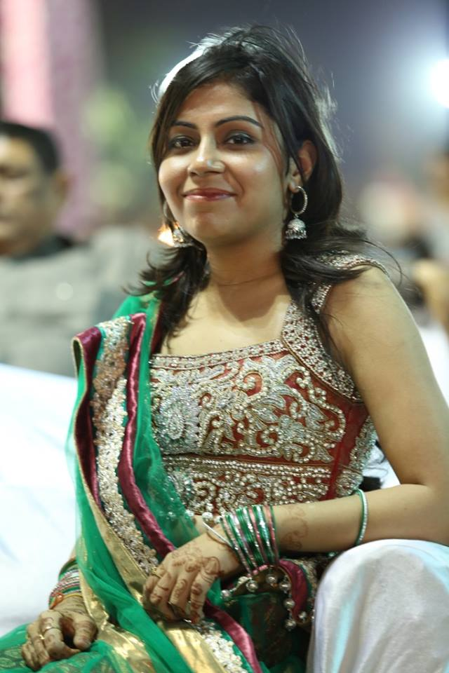Mahika Bhasin is like walking- sunshine. She wears her heart on her sleeve, is extremely wise for her age and loves writing. Very focused and helpful, Mahika is someone you can rely on. And she’s got a smile to kill for.
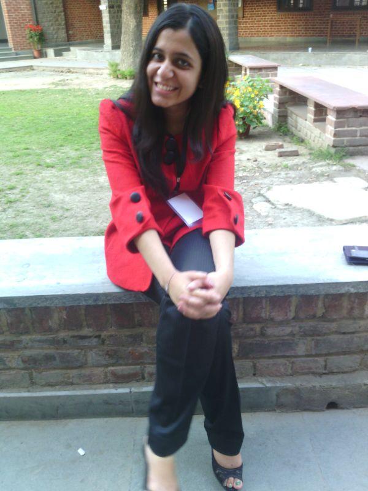Dharvi Verma is a vivacious girl who spreads happiness everywhere. Confident, hardworking, passionate and creative, Dharvi loves to wield her pen to express her thoughts. She loves to work, wants to go places and learn as much as she can. But, there’s a special place for Roger Federer in her heart. If things go in her favour, she might even ask him to marry her. Watch out! (Oh, wait. He is married!)
Executive Editor
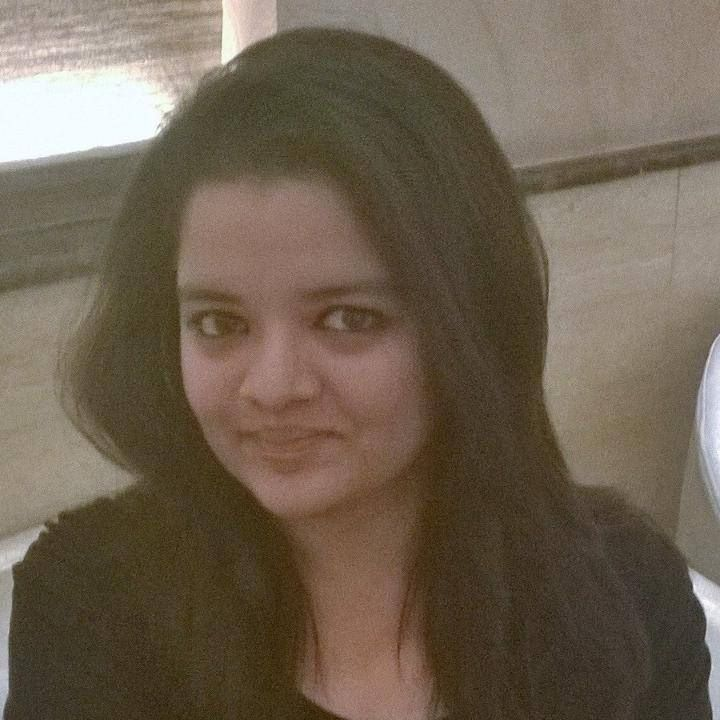Payal Mangla is a TV series fan. A bibliophile, she can go on and on and on about books and seasons and probably never stop! She knows what to say, when to say, when to be honest and when to lie. She is deep into science and literature. She is mad about Roger, Messi and lan Somerhalder!
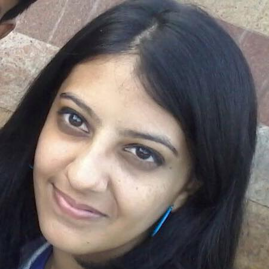Hemangini Malhotra loves to explore new stuff! She is a satisfied soul in every sense of the word! Of course, music helps her with that. She has a thing for serials (Only the English ones please, you dare to mention about the Hindi ones, and whoosh, you are dead!). She is smart, she knows how to write something to get you hooked and she loves Downton Abbey.
Literary Section - Section Editor
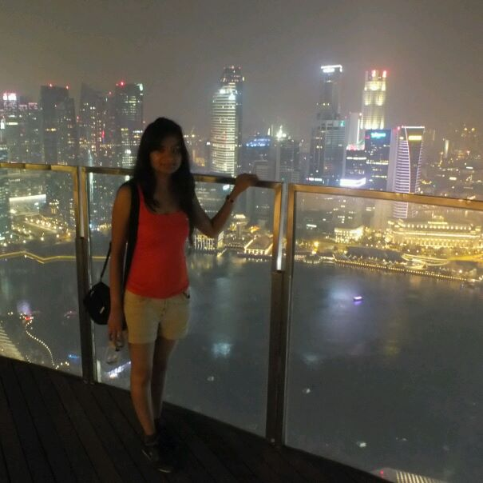Aarushi Goel is generally shy and nose deep into novels. She always has something new and fascinating to say. She is a word wizard, a know it all and has a unique kaleidoscope to view life. She enjoys life as it comes, living each moment and knows just when to let go!
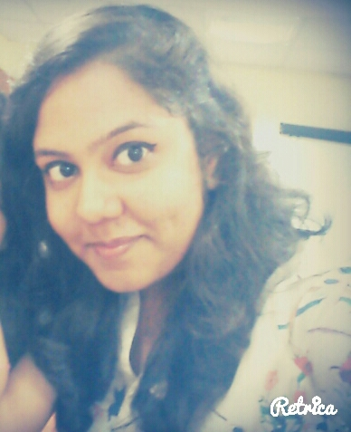For Kanika Sharma all things in life happen by chance and not through plans, she quips. She is the poster child for a kid who is confused about what she wants from life yet loves to enjoy it at all times. She might come across as an airhead but she loves to observe people (while making weird faces). With the life motto of “Love to hate and hate to love”, she wishes to one day break the mould of the quintessential middle class families that a “safe” career is a guarantee of a happy life.
Technical Section - Section Editor
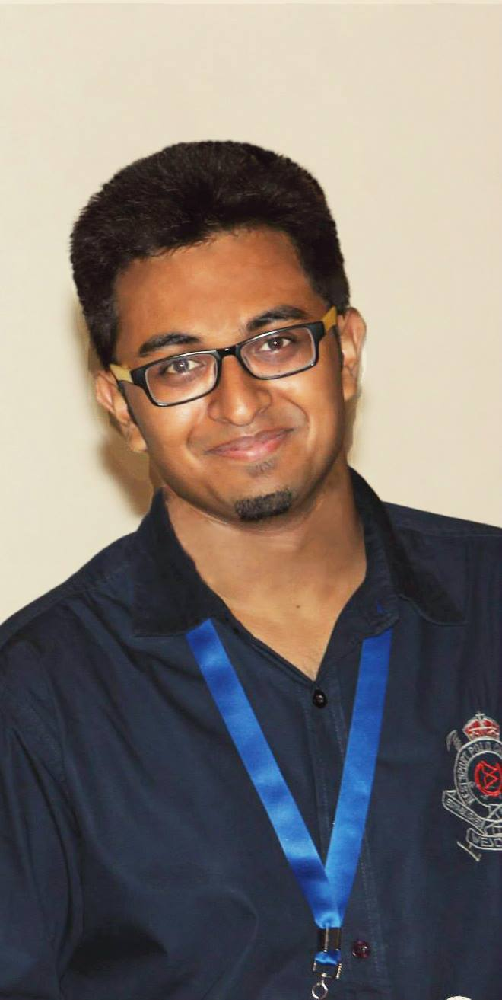Aditya Gupta is a film-buff & an addict when it comes to American and British TV series. He loves to debate & is an avid quizzer. He says he is a contrarian, logophile and hedonist. That was a lot but not enough! There’s so much more to this guy that you could ever explore!
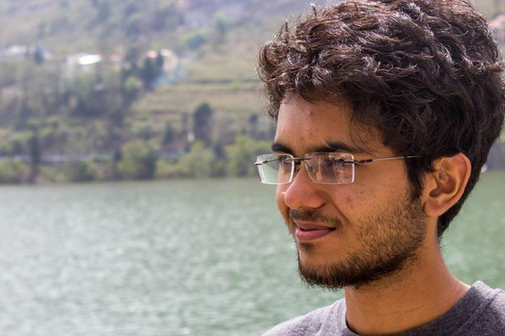Divyanshu Sharma is a creative guy who not only excels at designing, but is also a good guitarist. He is very practical and high-spirited. He is brutally honest and can teach anyone a thing or two about pragmatism.
Popular Science - Section Editor
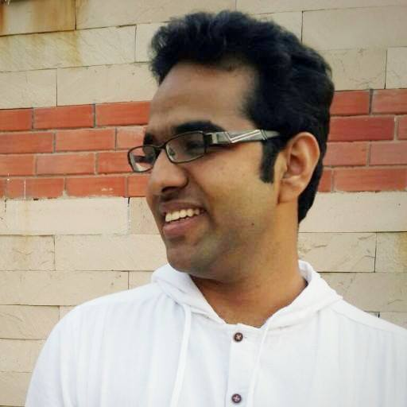Priyansh Singh is an ambitious, determined and efficient guy who has got coding on the brain. Web development is one of the things he’s passionate about. Star Trek and Star Wars are two other.
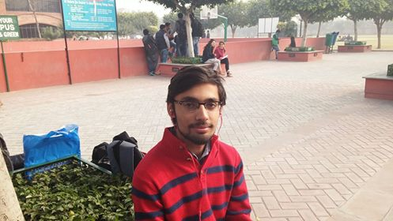Kshitij Kaushik is a jack of all trades, excelling in both electronics and computers. An avid gamer, he spends his free time playing ‘Dota’ and ‘League of Legends’.
Managerial Section - Section Editor
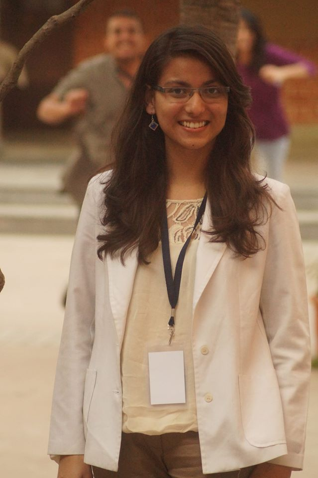Aishwarya Kaul is sincere and smart. She is a cooperative and classy girl who keeps her nose to the grindstone. She can sing, she can code, she can write. There’s not much she can’t do.
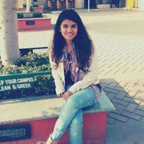Shreshtha Jain is a simple and a benevolent person. She’s a good cook too! She has different aspects in her personality. Sometimes, she acts kiddish and is very moody. But when it’s required, she acts like a mother, very caring. That’s what makes her special.
Vive Le Hesitation - Section Editor
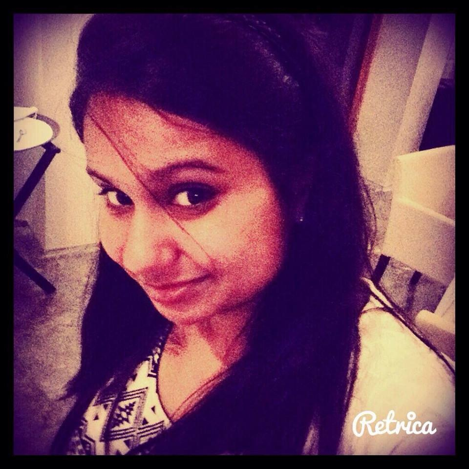Meenal Gupta heart calls for only four things: creativity, management, dance and reading/writing articles. If she believes in something, you can never be in a position to mess with it.
 Kunal Arora has a sly wit. He’s also “a backseat driver”, he says. And what a movie buff he is! You ask him anything from anywhere, he knows it all!
Kunal Arora has a sly wit. He’s also “a backseat driver”, he says. And what a movie buff he is! You ask him anything from anywhere, he knows it all!
Women In Engineering - Section Editor
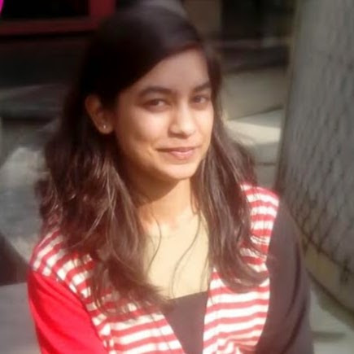Shefali Garg has an eye for adventure and travelling around the world is what she dreams for. A sheet of paper and a brush can never be left idle in her presence. Music provides essence to her life and not a day passes without it.
Hemangini Malhotra loves to explore new stuff! She is a satisfied soul in every sense of the word! Of course, music helps her with that. She has a thing for serials (Only the English ones please, you dare to mention about the Hindi ones, and whoosh, you are dead!). She is smart, she knows how to write something to get you hooked and she loves Downton Abbey.
Pratibimb Online Edition Design Team
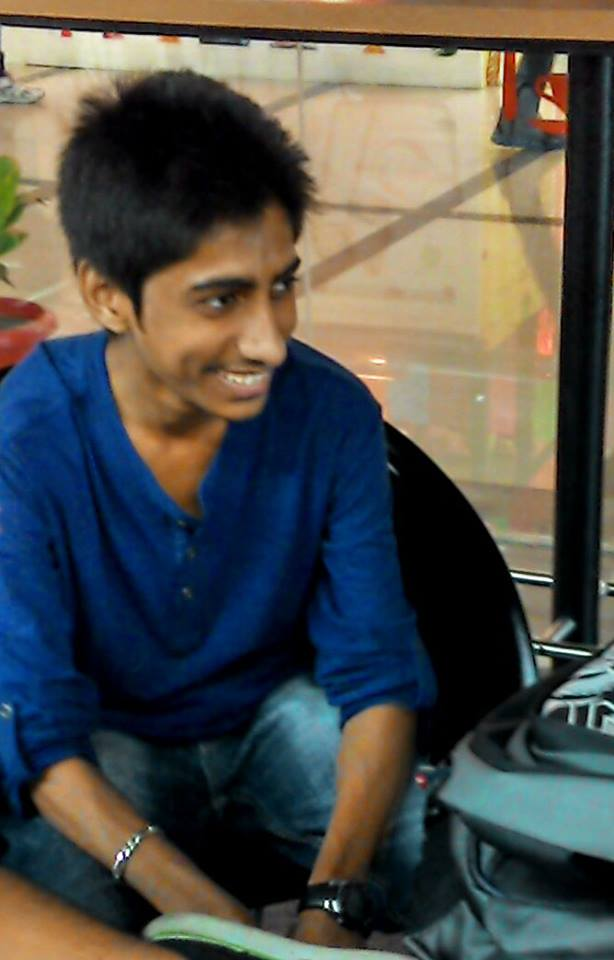Aditya Dev Sharma is a helpful, sedulous guy who places his work above everything. He’s inquisitive, caring and is a really good listener. He’s also a musician besides being adept at designing.
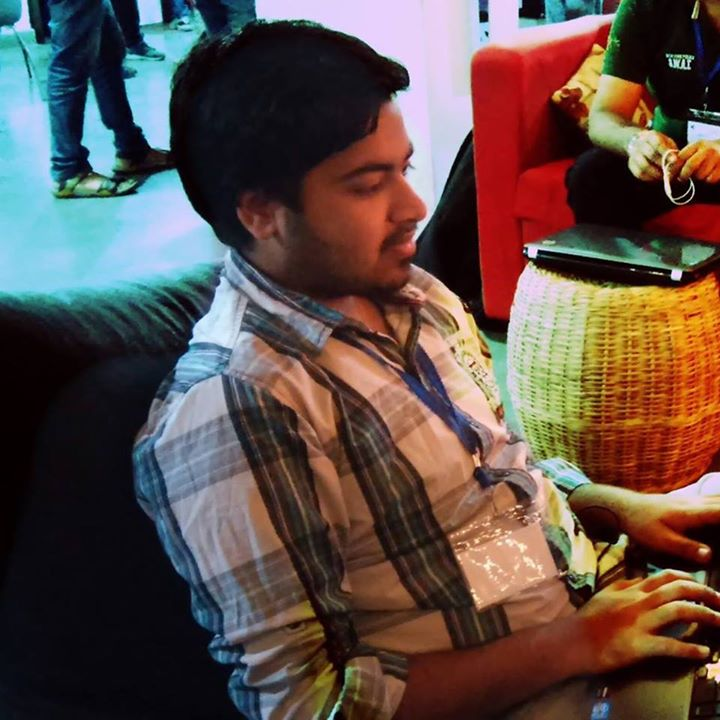Kunal Sachdeva is an incredible coder. He is the Professor-X of programming languages. Besides being very modest, Kunsl is one of the most helpful people you can come across.